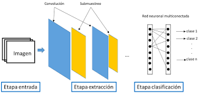

Redes Neuronales Convolucionales en Visión Artificial
Autores: Krizhevsky, A.; Sutskever, I.; Hinton, G.
Revista: Communications of the ACM, Q1.
Este trabajo revolucionó el campo de la visión por computadora al introducir AlexNet, un modelo de redes neuronales convolucionales que logró un gran avance en el reconocimiento de imágenes.

Esquema de la arquitectura AlexNet.
Big Data y Computación en la Nube
Autores: Chen, M.; Mao, S.; Liu, Y.
Revista: Future Generation Computer Systems, Q1.
El artículo aborda cómo el procesamiento de grandes volúmenes de datos se apoya en infraestructuras de nube para ofrecer escalabilidad, rendimiento y almacenamiento eficiente.
Relación entre big data y la computación en la nube.
Algoritmos de Aprendizaje Reforzado
Autores: Mnih, V. et al.
Revista: Nature, Q1.
Este trabajo presentó el modelo Deep Q-Network (DQN), que combina redes neuronales profundas con aprendizaje por refuerzo, logrando superar a humanos en videojuegos de Atari.
Resultados del modelo DQN en videojuegos Atari.
Blockchain en la Seguridad de Datos
Autores: Swan, M.
Revista: IEEE Computer, Q1.
El artículo explica cómo blockchain puede usarse como un mecanismo descentralizado para garantizar integridad y transparencia en los datos digitales.
Esquema de la cadena de bloques y validación de datos.
Procesamiento de Lenguaje Natural con Transformers
Autores: Vaswani, A. et al.
Revista: Advances in Neural Information Processing Systems (NeurIPS), Q1.
Este artículo introdujo el modelo Transformer, una arquitectura que revolucionó el PLN y dio origen a modelos modernos como BERT y GPT.